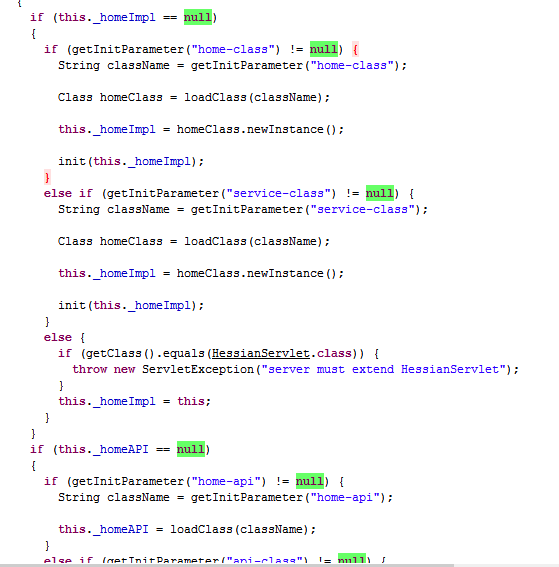

Hessian是一个轻量级的RPC框架
它基于HTTP协议传输，使用Hessian二进制序列化(所以使用post请求)，对于数据包比较大的情况比较友好。
Hessian通常通过Web应用来提供服务，因此非常类似于WebService。只是它不使用SOAP协议。
要求
服务端
-
包含Hessian的jar包
-
javaBean要实现Serializable接口
-
接口及接口的实现
-
配置web.xml,配置相应的servlet
客户端
-
包含Hessian的jar包
-
服务端把相关javaBean和接口导出为jar包提供给客户端使用
注意
参数及返回值需实现Serializable接口
参数及返回值不能为自定义实现List, Map, Number, Date, Calendar等接口，只能用JDK自带的实现，因为hessian会做特殊处理，自定义实现类中的属性值都会丢失。
Demo
服务端代码
public class User implements Serializable {
private static final long serialVersionUID = 2129368418409890807L;
private String name;
private int age;
//getter/setter....
}
public interface UserService {
public List<User> listUser();
}
public class UserServiceImpl implements UserService{
@Override
public List<User> listUser() {
List<User> list = new ArrayList<User>();
list.add(new User("张三",18));
list.add(new User("李四",19));
return list;
}
}
<servlet>
<servlet-name>UserService</servlet-name>
<servlet-class>com.caucho.hessian.server.HessianServlet</servlet-class>
<!-- 配置接口的具体实现类，service-class，home-class都可以 -->
<init-param>
<param-name>home-class</param-name>
<param-value>net.tmaize.demo.service.impl.UserServiceImpl</param-value>
</init-param>
</servlet>
<servlet-mapping>
<servlet-name>UserService</servlet-name>
<url-pattern>/rpc/UserService</url-pattern>
</servlet-mapping>
客户端代码
服务端先导出jar文件为客户端使用
String url = "http://127.0.0.1:8080/hession-demo/rpc/UserService";
HessianProxyFactory factory = new HessianProxyFactory();
UserService userService = (UserService) factory.create(UserService.class, url);
List<User> list = userService.listUser();
System.out.println(new Gson().toJson(list));
简化
xml还可而已这样配置,其他略….
UserServiceImpl继承HessianServlet实现UserService
public class UserServiceImpl extends HessianServlet implements UserService
<servlet>
<servlet-name>UserService</servlet-name>
<servlet-class>net.tmaize.demo.service.impl.UserServiceImpl</servlet-class>
</servlet>
